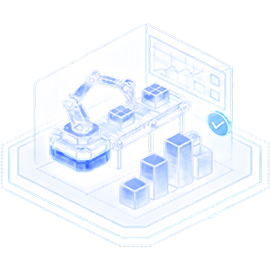
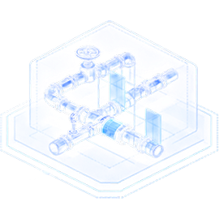
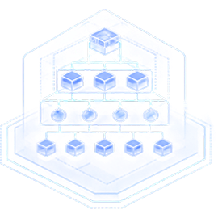
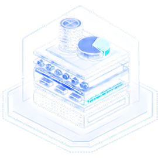

PILLAR 2 OF 4
OPERATIONAL INTELLIGENCE
The internal-execution read: real cost structure, bottlenecks, process architecture, and readiness to scale or export. Strategic direction creates value only when operations can deliver it.

THE QUESTIONS WE ANSWER
Clearer answers. Smarter decisions. Greater confidence.
From efficiency and cost to bottlenecks and scaling readiness, we take a structured look at how your operations work in practice and what needs to change to unlock higher, more sustainable performance.
How efficiently are we really operating?
Assess performance, resource use and productivity.

What is our true cost to operate?
Understand cost structures, value drivers and opportunities for optimisation.

Where are the bottlenecks?
Identify constraints across people, processes and systems.

Are our operations ready to scale?
Assess readiness, resilience and the capability to grow sustainably.


WHAT WE EXAMINE
The anatomy of this intelligence


Operational
efficiency

Bottlenecks

Process
architecture

True cost
structure
Export & scale
readiness
Quality, compliance
& governance
SERVICES UNDER THIS INTELLIGENCE
Operational readiness assessment
A baseline of efficiency, capacity, and scale-readiness.
Cost structure & bottleneck diagnostics
True costs, and the constraints setting your pace.
Business process optimisation
Core workflows redesigned for throughput and control.
Supply chain & warehousing review
Flow, storage, and distribution readiness.
Quality & accreditation readiness support
Gap assessment and roadmap, with independent certification bodies.
Export & scale readiness programme
What must be true before volume grows.


FEEDS INTO
Digital Intelligence: enabling operations through connected systems, reliable data and fit-for-purpose automation.

WHEN OPERATING READINESS BECOMES CRITICAL
Independent operational intelligence for moments when growth, performance or assurance cannot be left to assumption.

SCALE & EXPAND
Can the current operating model support growth?
- Capacity planning
- Facility readiness
-
 Scale-up and export readiness
Scale-up and export readiness

IMPROVE & OPTIMISE
Where are bottlenecks eroding performance?
- Workflow redesign
-
 Cost and productivity
Cost and productivity
-
 Resource Utilization
Resource Utilization

PREPARE & ASSURE
Are operations ready for audit or change?
-
 Quality and accreditation
Quality and accreditation
-
 Operational risk
Operational risk
- Audit and transition readiness
Operational Intelligence reveals what must change before organisations expand capacity, redesign services, commit capital or enter a critical assurance process.